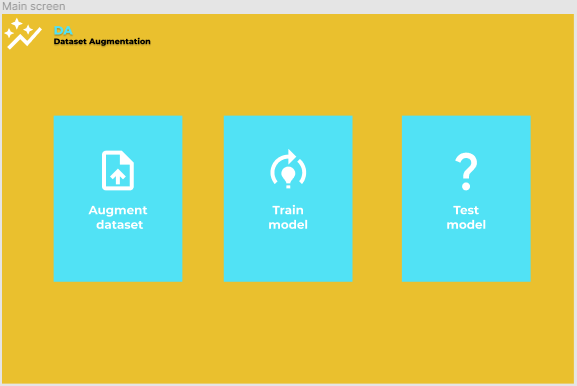
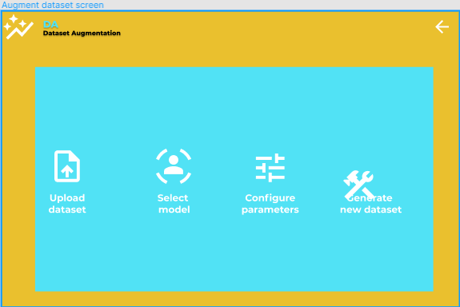
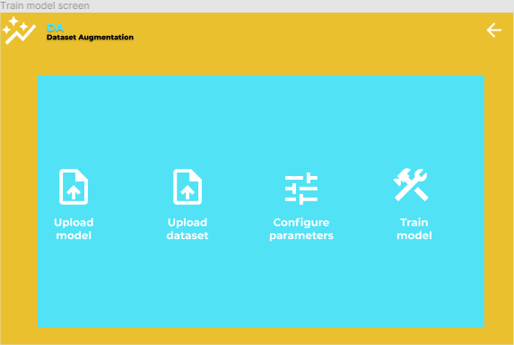
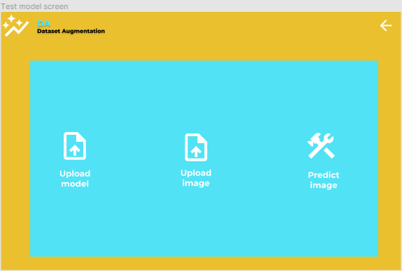

Dataset Augmentation Tool
Table of contents
Introduction
DA - Dataset Augmentation is a tool developed for automatically generating new data from the current one by using a
neural network.
The application was initially developed for the MineRL competition, its main purpose
being
splitting the videos from the dataset and rejoining parts from different videos to generate new data.
After seeing its effectiveness on the MineRL dataset, the application was expanded to support other datasets, by
offering the option to provide your own neural network model.
Design
The application was designed in Figma




Application Functions
The following major functions are identified:
- Generate a new dataset from the current one using a neural network
- Train a neural network model that can be used for custom datasets
- Test the neural network used to identify the splitting points
MAP
The following concepts were used while designing the application
- Minimalism, offering easy access to the user, without filler content
- Reused the same template for different windows so the user has a familiar feeling and gets used to the
applicaiton easier.
- Used only 2 contrasting colors (except black and white), so that readability is improved. The colors were
selected using this tool
QOC - Questions, Options, Criteria
Q: How is the user introduced to the application?
A: The user is presented with the main screen which has 3 suggestive options to choose from.
Q: What datasets can the user augment?
A: The user can augment any dataset containing videos which have a repetitive splitting point
Q: Can the user customize the dataset generation?
A: The user can specify from a list of video rejoining methods and also the selection of videos to rejoin.
Personas
Ander Durham
22 years old
Gamer
Desktop
I know $20 and $19.99 are the same thing, but a deal is a deal.
Goals
- Find recommendations based on my preferences
- To become an influencer of this content
- Learn about something new
Frustrations
- Hate when a checkout process takes a long time
- Seeing options with very little details
- Fonts that are too thin to read
Motivations
- I love the idea of being able to easily find a new online community
- I want to discover new things
- I love being able to save my cart so I can make my purchase later
Dawson Dixon
28 years old
Data scientist
Macbook Pro 16'
I'm a very visual person so I love seeing images that help paint the picture.
Goals
- I want to find some inspiration for an upcoming project
- I want to avoid boredom by talking with other people
- Earn loyalty points that would help me get a better deal
Frustrations
- Not being able to display more results per page makes searching take
longer
- Hate cluttered layouts
- Hate when a checkout process takes a long time
Motivations
- I love the idea of being able to easily find a new online community
- I want to discover new things
- I love being able to save my cart so I can make my purchase later
Kiyan Dempsey
25 years old
Youtuber
Macbook Air 13'
Getting confirmation through banner notifications always quells my anxiety.
Goals
- I want to find some inspiration for an upcoming project
- I want to find out what other people have to say about a topic
- Find recommendations based on my preferences
Frustrations
- Red text on dark backgrounds is the worst!
- Hate when a checkout process takes a long time
- Too many colors being used unecessarily
Motivations
- Affordability
- Always glad when I get to see lots of options
- Affordability
Azul Baldwin
21 years old
Student
Macbook Pro 14'
I love having my favorite things available without having to search for them.
Goals
- Entertain myself during free time
- I want to find some inspiration for an upcoming project
- Want to save my favorite options so I can check them at a later time
Frustrations
- Breaking down a process helps me better understand it
- undefined
- Novelty fonts that are hard to read
Motivations
- I want to be able to see what my friends are interested in
- Transparency of information
- Being able to track my order or track my progress really speaks to my OCD